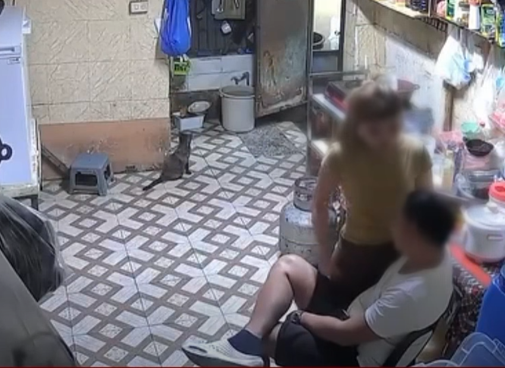

Balita · Malolos, Bulacan
Pulis na viral sa pambubugbog sa dyowa, sinibak

Inalis sa kaniyang puwesto at inilagay sa holding unit ng Malolos City Police Station ang isang police corporal matapos kumalat ang video ng umano’y pananakit niya sa kaniyang live-in partner sa Malolos, Bulacan. Itinago sa alyas na “Aira” ang pagkakakilanlan ng biktima.
Ayon sa ulat, nagtamo umano si Aira ng mga pasa sa mukha at katawan at dinala sa ospital upang magamot.
Sinabi ng Malolos Police na kinukuha nila ang pahayag ng dalawang panig upang matukoy ang buong pangyayari. Nais din umanong magsampa ng kaso ng biktima laban sa pulis.
Kinondena ng Malolos Police ang anumang uri ng karahasan, lalo na laban sa kababaihan, at sinabing hindi nila kinukunsinti ang sinumang lumalabag sa batas at patakaran ng Philippine National Police.
Patuloy ang imbestigasyon. Ayon sa ulat, haharap sa kaukulang proseso ang police corporal kung mapatunayang may pananagutan siya sa umano’y pananakit.
Sanggunian
- Pilipino Star Ngayon. (2026, May 12). Pulis na viral sa pambubugbog sa dyowa, sinibak. Basahin ang orihinal na ulat